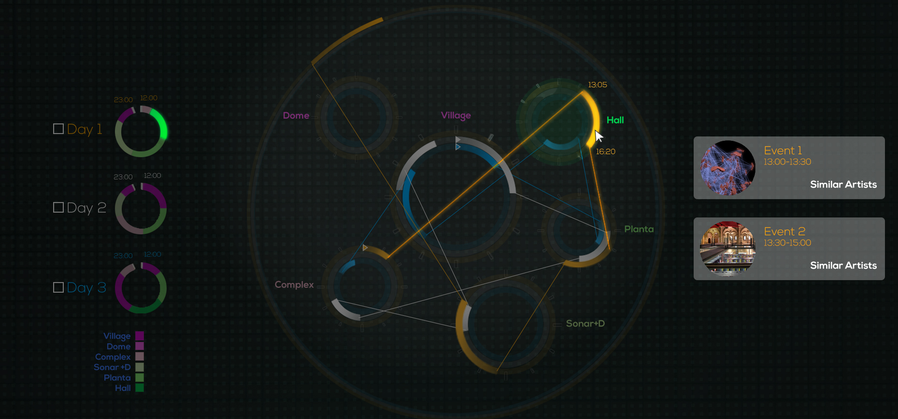
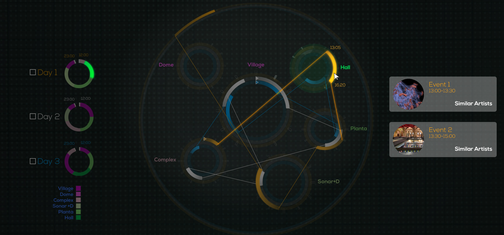

The Team
The project

The scientific visualization group of BSC-CNS will deploy at Sonar by Day a network of sensors to detect and follow wireless communication devices, such as mobile phones and make a real time analysis of how they move around the space of the festival.
All the data collected will be anonymized so the audience cannot be identified without their consent. The people that stop by the BSC space (or their web, after Sonar) and register their phones will access visualizations of their own activity, how they fare in comparison to the rest of the crowd, and recommendations based on which events they have attended or liked.

Press package in Word or PDF format.
The Barcelona Supercomputing Center (BSC-CNS) is one of the most important scientific institutions based in Barcelona, specialises on High Performance Computing (HPC) and Big Data, offering infrastructure and supercomputing services to local and European scientists, as well as generating knowledge and technology for giving it back to society.
After the success of their impactful music data visualization presented in 2014, the BSC comes back to Sonar+D with an even more ambitious project that will turn the whole festival into a big collective experiment.
After the success of their impactful music data visualization presented in 2014, the BSC comes back to Sonar+D with an even more ambitious project that will turn the whole festival into a big collective experiment.
The scientific visualization group of BSC-CNS will deploy at Sonar by Day a network of sensors to detect and follow wireless communication devices, such as mobile phones and make a real time analysis of how they move around the space of the festival.
All the data collected will be anonymized so the audience cannot be identified without their consent. The people that stop by the BSC space (or their web, after Sonar) and register their phones will access visualizations of their own activity, how they fare in comparison to the rest of the crowd, and recommendations based on which events they have attended or liked.

Press package in Word or PDF format.